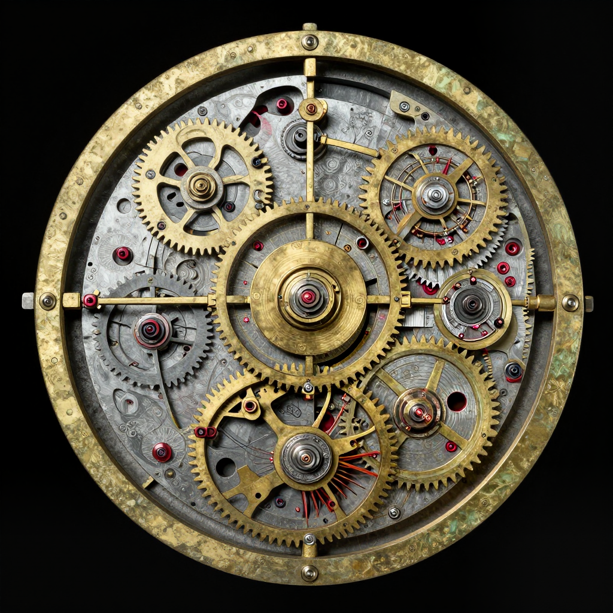

The Antikythera Mechanism: An Ancient Computer!

The Antikythera Mechanism - a 2,000-year-old computer found in a shipwreck!
Imagine finding an old computer at the bottom of the ocean. Now imagine that computer is 2,000 years old! That's exactly what happened in 1901, when divers discovered the Antikythera Mechanism - the world's first known computer.
But here's the mystery: ancient Greeks weren't supposed to have this kind of technology. How did they build something so advanced, and why did this knowledge disappear for over a thousand years?
A Shocking Discovery
In 1901, sponge divers were searching for sea creatures near the Greek island of Antikythera. They found something much more interesting - an ancient Roman shipwreck filled with treasures!
Among the statues and pottery was a strange lump of corroded bronze. It didn't look like much at first. But when scientists examined it closely, they saw something incredible: tiny gear teeth - like the inside of a clock!

X-ray scans revealed at least 30 interlocking gears hidden inside the corroded bronze!
🔧 What's Inside?
The mechanism contains at least 30 bronze gears, some with tiny teeth less than 2 millimeters long. That's smaller than a grain of rice!
What Did This Ancient Computer Do?
The Antikythera Mechanism was like an ancient calculator. By turning a handle, you could:
- 🌙 Track the phases of the moon
- ☀️ Predict where the sun and planets would be in the sky
- 🌑 Forecast eclipses years in advance
- 🏅 Time the ancient Olympic Games!
It was incredibly accurate. The mechanism could even track the moon's wobbly path through the sky - something scientists didn't understand until hundreds of years later!
How Was It Found?
Divers exploring the ancient shipwreck where the mechanism was discovered.
The ship that carried the mechanism sank around 100 BCE - over 2,100 years ago! It was probably carrying treasures from the Greek island of Rhodes to Rome when a storm sent it to the bottom of the sea.
The mechanism lay hidden in the wreck for two millennia, protected by the Mediterranean waters. When divers finally brought it to the surface, nobody understood what it was for decades.
⏰ Technology Lost in Time
The type of gear technology in this machine didn't appear again in Europe until the 14th century - over 1,500 years later! What other ancient inventions have been lost to history?
The Mystery Continues
Scientists are still studying the Antikythera Mechanism today. Using advanced X-ray technology, they've been able to read hidden inscriptions and understand more about how it worked.
But many questions remain: Who built this amazing machine? Were there others like it? And what other incredible technologies did ancient civilizations possess that we've never discovered?
The Antikythera Mechanism proves that ancient people were far more clever than we ever imagined!
Why Historians and Engineers Still Study It
The Antikythera Mechanism is not important only because it is old. It matters because it shows a level of mechanical planning that many people assumed did not exist in the ancient world. The surviving fragments include interlocking gears, engraved scales, and instructional text. Together, they show that this was not a decorative object. It was designed to calculate.
A useful way to frame the mechanism is as a compact, hand-powered astronomical calculator that combines mathematics, metalworking, and display design in a single instrument.
The Evidence Ladder: How Confident Are We?
Good history separates strong evidence from weak evidence. With the Antikythera Mechanism, researchers often use an "evidence ladder":
- Highest confidence: what can be directly observed on surviving fragments, including gear teeth counts and legible inscriptions.
- High confidence: reconstructions that match both mechanical constraints and inscriptional references.
- Medium confidence: likely functions inferred from incomplete gear trains or partial labels.
- Lower confidence: features suggested by analogy with later devices but not directly preserved.
This framework helps keep the discussion honest. It allows excitement without pretending we know every detail.
How Scientists Decode Corroded Bronze
Most of the mechanism is fragmented and heavily corroded, so researchers cannot simply "read" it like a modern machine. Instead, they combine multiple methods:
- High-resolution imaging to inspect tiny surface details and inscription traces.
- X-ray and CT scanning to see hidden internal structures and buried gear geometry.
- Mechanical modeling to test whether proposed gear relationships actually work.
- Philology and epigraphy to interpret Greek text and technical terminology.
Each method alone is incomplete. The strongest conclusions appear when all methods point in the same direction.
Where Experts Agree and Where They Still Argue
There is broad agreement that the mechanism tracked astronomical cycles and supported eclipse prediction. There is also strong support for calendar-related functions and links to major civic timekeeping cycles. What remains debated are some front-display details, exact planetary gearing configurations, and how much of the original display system is now lost.
This is normal in serious research. Scientific disagreement does not mean "nobody knows anything." It means the remaining questions are hard and require careful testing.
What This Teaches About Ancient Technology
The mechanism challenges a common myth: that technological history moves in a simple straight line from "primitive" to "advanced." Real history is messier. Knowledge can appear, spread unevenly, and sometimes disappear from everyday use for long periods.
The Antikythera story highlights a broader historical point: human creativity existed in every era, while tools, institutions, and knowledge-transfer networks changed over time.
References & Further Reading
- Freeth et al. (2006), Nature: decoding the Antikythera Mechanism
- UCL research update on reconstruction models (2021)
- National Archaeological Museum digital exhibit on the Mechanism
- Britannica reference overview
- Google Scholar literature search
Editorial note: reconstructions are continuously revised as imaging and inscription studies improve. See our Editorial Policy.